import numpy as np
import pandas as pd
import matplotlib.pyplot as plt
from IPython.display import display
from sklearn.datasets import make_moons, load_diabetes, load_breast_cancer
from sklearn.model_selection import train_test_split, cross_val_score
from sklearn.tree import DecisionTreeRegressor, DecisionTreeClassifier, plot_tree
from sklearn.metrics import mean_squared_error, accuracy_score, ConfusionMatrixDisplay
np.set_printoptions(precision=4, suppress=True)
rng = np.random.default_rng(657677)24 Imports
25 CART: Classification and Regression Trees
So far, our supervised methods have usually taken a parametric form. For example, in linear regression we used
\[ s_w(x)=w^Tx, \]
and in logistic regression we used a linear score passed through a nonlinear action or probability map.
Trees use a different idea. They divide the input space into simple regions (rectangles), and then make a simple prediction inside each region.
In this lecture we cover basic CARTs: Classification and Regression Trees.
25.1 Supervised learning setup
Let’s recall our setup: we observe training data
\[ (x_1,y_1),\dots,(x_N,y_N), \]
where
\[ x_n \in \mathbb{R}^D. \]
The goal is to learn a prediction rule \(\hat f(x) = a(\hat{s}(x))\) that predicts \(y\) from \(x\).
In the ERM language, we choose \(\hat s\) to have small empirical risk
\[ \hat{s} = \arg\min_{s\in\mathcal{S}} \hat{R}(s). \]
Common losses are the squared error for regression, or cross entropy for classification.
CARTs give a way to construct \(\hat f\) by recursively splitting the feature space.
25.2 Basic idea of a tree
A tree recursively divides the input space into regions. Each split has the form
\[ x_j \leq t \]
versus
\[ x_j > t, \]
where \(j\) is a feature index and \(t\) is a threshold. (Here, somewhat confusingly, \(x_j\) is the \(j^{th}\) variable). Trees will do this partitioning recusively, over and over, which will eventually partition the \(X\)-space into a series of rectangles.
from matplotlib.patches import Rectangle
from sklearn.tree import DecisionTreeRegressor
from ipywidgets import interact, IntSlider
# Simulate 2D regression data
rng = np.random.default_rng(657677)
N = 250
X = rng.uniform(0, 1, size=(N, 2))
def f_true(x):
x1 = x[:, 0]
x2 = x[:, 1]
y = np.zeros(len(x))
y += 2.0 * (x1 > 0.45)
y += 1.5 * (x2 > 0.60)
y -= 1.0 * ((x1 > 0.70) & (x2 < 0.35))
return y
y = f_true(X) + rng.normal(scale=0.25, size=N)
# Fit a regression tree
tree_model = DecisionTreeRegressor(
max_depth=4,
min_samples_leaf=10,
random_state=657677
)
tree_model.fit(X, y)
tree = tree_model.tree_
node_rectangles = {}
def build_node_rectangles(
node=0,
x1_min=0.0,
x1_max=1.0,
x2_min=0.0,
x2_max=1.0
):
node_rectangles[node] = {
"x1_min": x1_min,
"x1_max": x1_max,
"x2_min": x2_min,
"x2_max": x2_max,
"prediction": tree.value[node].ravel()[0],
"n_samples": tree.n_node_samples[node],
}
feature = tree.feature[node]
threshold = tree.threshold[node]
# Leaf node
if feature < 0:
return
left = tree.children_left[node]
right = tree.children_right[node]
if feature == 0:
build_node_rectangles(
left,
x1_min=x1_min,
x1_max=threshold,
x2_min=x2_min,
x2_max=x2_max
)
build_node_rectangles(
right,
x1_min=threshold,
x1_max=x1_max,
x2_min=x2_min,
x2_max=x2_max
)
elif feature == 1:
build_node_rectangles(
left,
x1_min=x1_min,
x1_max=x1_max,
x2_min=x2_min,
x2_max=threshold
)
build_node_rectangles(
right,
x1_min=x1_min,
x1_max=x1_max,
x2_min=threshold,
x2_max=x2_max
)
build_node_rectangles()
def preorder_internal_nodes(node=0):
feature = tree.feature[node]
if feature < 0:
return []
left = tree.children_left[node]
right = tree.children_right[node]
return (
[node]
+ preorder_internal_nodes(left)
+ preorder_internal_nodes(right)
)
split_order = preorder_internal_nodes()
def active_nodes_after_t_splits(t):
active_nodes = [0]
for node in split_order[:t]:
if node not in active_nodes:
continue
active_nodes.remove(node)
left = tree.children_left[node]
right = tree.children_right[node]
active_nodes.extend([left, right])
return active_nodes
def plot_recursive_partitioning(t):
active_nodes = active_nodes_after_t_splits(t)
plt.figure(figsize=(6, 5))
plt.scatter(
X[:, 0],
X[:, 1],
c=y,
s=35,
alpha=0.75
)
ax = plt.gca()
for node in active_nodes:
rect = node_rectangles[node]
x1_min = rect["x1_min"]
x1_max = rect["x1_max"]
x2_min = rect["x2_min"]
x2_max = rect["x2_max"]
width = x1_max - x1_min
height = x2_max - x2_min
patch = Rectangle(
(x1_min, x2_min),
width,
height,
fill=False,
linewidth=2
)
ax.add_patch(patch)
ax.text(
x1_min + width / 2,
x2_min + height / 2,
f"{rect['prediction']:.2f}",
ha="center",
va="center",
fontsize=10
)
# Highlight the split just made
if t > 0:
node = split_order[t - 1]
rect = node_rectangles[node]
feature = tree.feature[node]
threshold = tree.threshold[node]
if feature == 0:
plt.plot(
[threshold, threshold],
[rect["x2_min"], rect["x2_max"]],
linewidth=4,
label=f"new split: $x_1 \\leq {threshold:.2f}$"
)
elif feature == 1:
plt.plot(
[rect["x1_min"], rect["x1_max"]],
[threshold, threshold],
linewidth=4,
label=f"new split: $x_2 \\leq {threshold:.2f}$"
)
plt.legend(loc="upper left")
plt.xlim(0, 1)
plt.ylim(0, 1)
plt.xlabel("$x_1$")
plt.ylabel("$x_2$")
if t == 0:
plt.title("Step 0: no splits yet")
else:
plt.title(f"Step {t}: recursive partitioning")
plt.colorbar(label="$y$")
plt.tight_layout()
plt.show()interact(
plot_recursive_partitioning,
t=IntSlider(
value=0,
min=0,
max=len(split_order),
step=1,
description="split"
)
);After doing this recursive splitting to some depth (based on some criterion) we will have partitioned the feature space into leaf regions/rectangles:
\[ R_1, R_2, \dots, R_M. \]
Inside each region, the tree uses a simple prediction.
For a regression tree it predicts a constant within each leaf. Overall, we may write this as:
\[ \hat s(x) = \text{$c_m$ if $x\in R_m$} = \sum_{m=1}^M c_m \mathbf{1}\{x \in R_m\} \]
where \(c_m\) is a constant prediction in region \(R_m\). Of course, for regression \(\hat f = \hat s\).
In particular, for regression trees constant value predicted is the mean of the points in the region:
\[ \hat c_m=\frac{1}{N_m}\sum_{n:x_n\in R_m} y_n, \]
where
\[ N_m = \#\{n:x_n\in R_m\}. \]
Therefore the fitted regression tree is
\[ \hat s(x)=\sum_{m=1}^M \hat c_m\mathbf{1}\{x\in R_m\}. \]
For a classification tree, suppose
\[ Y \in \{1,\dots,K\}. \]
In each region \(R_m\), define the empirical class proportions
\[ \hat p_{mk}=\frac{1}{N_m} \sum_{i:x_i \in R_m} \mathbf{1}\{y_i=k\} = \text{pct. of class $k$ in $R_m$}, \qquad k=1,\dots,K. \]
So each leaf has an estimated class-probability vector
\[ \hat p_m =\begin{bmatrix} \hat p_{m1} \\ \vdots \\ \hat p_{mK} \end{bmatrix} \in \mathbb{R}^K \]
Then the fitted score function is
\[ \hat s(x) =\sum_{m=1}^M \hat p_m \mathbf{1}\{x \in R_m\} = \text{$\hat p_m$ if $x\in R_m$} \]
Thus \(\hat s(x) \in \mathbb{R}^K\), and its \(k\)th entry is the estimated probability that \(Y=k\).
The final predicted class is
\[ \hat f(x)=\arg\max_{1 \le k \le K} s_k(x). \]
In any case, the score functions for the trees are a piecewise constant prediction function.
The whole game for fitting these trees comes down to coming up with good splits:
- which variable do I split on?
- where do I split?
- when do I stop?
25.3 Why is this called a tree?
We can visualize this as a tree!
from sklearn.tree import plot_tree
plt.figure(figsize=(14, 8))
plot_tree(
tree_model,
feature_names=["x1", "x2"],
filled=True,
rounded=True,
impurity=True,
proportion=False,
precision=2
)
plt.title("Regression tree fit to the simulated 2D data")
plt.show()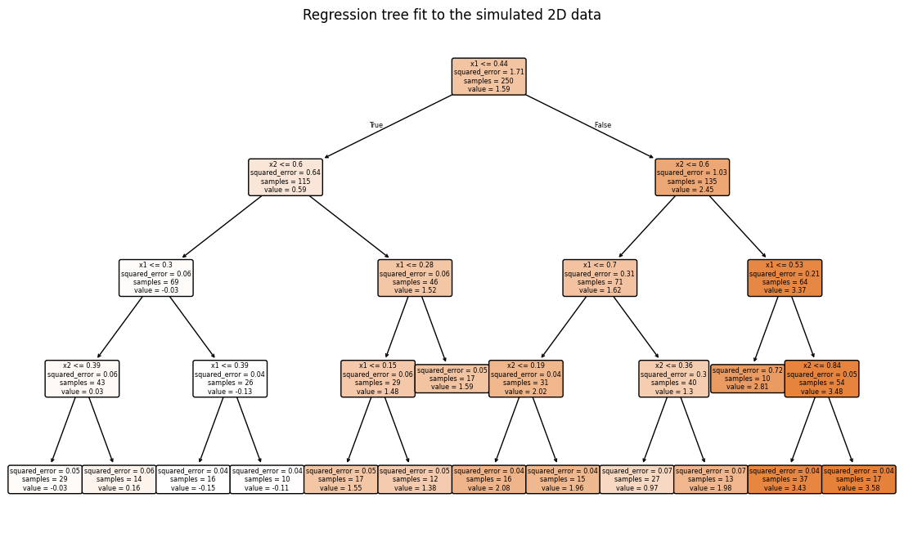
from sklearn.tree import export_text
tree_rules = export_text(
tree_model,
feature_names=["x1", "x2"]
)
print(tree_rules)|--- x1 <= 0.44
| |--- x2 <= 0.60
| | |--- x1 <= 0.30
| | | |--- x2 <= 0.39
| | | | |--- value: [-0.03]
| | | |--- x2 > 0.39
| | | | |--- value: [0.16]
| | |--- x1 > 0.30
| | | |--- x1 <= 0.39
| | | | |--- value: [-0.15]
| | | |--- x1 > 0.39
| | | | |--- value: [-0.11]
| |--- x2 > 0.60
| | |--- x1 <= 0.28
| | | |--- x1 <= 0.15
| | | | |--- value: [1.55]
| | | |--- x1 > 0.15
| | | | |--- value: [1.38]
| | |--- x1 > 0.28
| | | |--- value: [1.59]
|--- x1 > 0.44
| |--- x2 <= 0.60
| | |--- x1 <= 0.70
| | | |--- x2 <= 0.19
| | | | |--- value: [2.08]
| | | |--- x2 > 0.19
| | | | |--- value: [1.96]
| | |--- x1 > 0.70
| | | |--- x2 <= 0.36
| | | | |--- value: [0.97]
| | | |--- x2 > 0.36
| | | | |--- value: [1.98]
| |--- x2 > 0.60
| | |--- x1 <= 0.53
| | | |--- value: [2.81]
| | |--- x1 > 0.53
| | | |--- x2 <= 0.84
| | | | |--- value: [3.43]
| | | |--- x2 > 0.84
| | | | |--- value: [3.58]
25.4 Regression trees
Why predict the mean? It comes from assuming a squared-error loss. For squared error loss, the best constant prediction in a region is the mean of the training outcomes in that region. Recall back to our discussion about ERM.
One way to measure the training error for a tree \(T\) is the residual sum of squares:
\[ RSS(T) =\sum_{m=1}^M \sum_{n:x_n\in R_m} (y_n-\hat c_m)^2. \]
How do we choose good splits? Ideally we would search over all possible trees and find the best one. In practice this is not possible. Instead we follow a greedy recursive approach.
At a node, suppose the current region is \(R\). Consider splitting \(R\) using feature \(j\) and threshold \(t\). This will create two regions:
\[ R_1(j,t) = \{x\in R: x_j \leq t\}, \]
\[ R_2(j,t) = \{x\in R: x_j > t\}. \]
For each candidate split \((j,t)\), CART computes the resulting RSS if we make this split:
\[ RSS(j,t) =\sum_{n:x_n\in R_1(j,t)}(y_n-\hat c_1)^2 + \sum_{n:x_n\in R_2(j,t)}(y_n-\hat c_2)^2, \]
where \(\hat c_1\) and \(\hat c_2\) are the sample means in the two child nodes.
Then it chooses the split with the smallest RSS:
\[ (\hat j,\hat t) =\arg\min_{j,t} RSS(j,t). \]
This is done greedily: find the best split now, then repeat the same procedure inside each child node.
For a numeric predictor \(x_j\), CART does not search over every possible threshold \(t \in \mathbb{R}\). At a given node, the split only changes when \(t\) crosses an observed value of \(x_j\). Therefore it is enough to sort the distinct observed values of \(x_j\) in that node and try thresholds halfway between consecutive values:
\[ t_\ell = \frac{x_{(\ell)j}+x_{(\ell+1)j}}{2}. \]
For each candidate pair \((j,t_\ell)\), CART computes the loss after the split and chooses the split with the largest reduction in loss. This is done greedily at each node.
25.4.1 By-hand splitting
For a one-dimensional example, we can search over possible thresholds and compute the RSS after each split.
N_samp = 50
x = 1/(1+np.exp(-np.random.normal(0,1,N_samp)))
def f(x):
return (x-1/2)**3/10
y = f(x) + np.random.normal(len(x))
plt.scatter(x,y)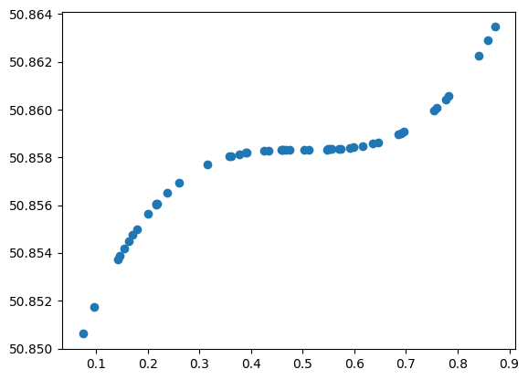
def rss_of_values(y_values):
# Residual sum of squares around the sample mean.
if len(y_values) == 0:
return np.inf
return np.sum((y_values - y_values.mean()) ** 2)
def best_split_1d(x, y, min_leaf=5):
# Find the best one-dimensional regression-tree split.
order = np.argsort(x)
x_sorted = x[order]
y_sorted = y[order]
thresholds = (x_sorted[:-1] + x_sorted[1:]) / 2
rows = []
for t in thresholds:
left = x_sorted <= t
right = ~left
# stop when the number of points in the leaves get too small
if left.sum() < min_leaf or right.sum() < min_leaf:
continue
rss_left = rss_of_values(y_sorted[left])
rss_right = rss_of_values(y_sorted[right])
rss_total = rss_left + rss_right
rows.append({
"threshold": t,
"n_left": left.sum(),
"n_right": right.sum(),
"rss": rss_total,
"left_mean": y_sorted[left].mean(),
"right_mean": y_sorted[right].mean(),
})
return pd.DataFrame(rows).sort_values("rss")split_table = best_split_1d(x, y, min_leaf=1)
display(split_table.head(10))
best_t = split_table.iloc[0]["threshold"]
print("Best first split threshold:", round(best_t, 3))| threshold | n_left | n_right | rss | left_mean | right_mean | |
|---|---|---|---|---|---|---|
| 12 | 0.248395 | 13 | 37 | 0.000106 | 50.854519 | 50.858904 |
| 11 | 0.227226 | 12 | 38 | 0.000108 | 50.854353 | 50.858840 |
| 13 | 0.288098 | 14 | 36 | 0.000108 | 50.854692 | 50.858958 |
| 10 | 0.217159 | 11 | 39 | 0.000112 | 50.854197 | 50.858769 |
| 14 | 0.336874 | 15 | 35 | 0.000115 | 50.854893 | 50.858994 |
| 9 | 0.216465 | 10 | 40 | 0.000115 | 50.854011 | 50.858702 |
| 8 | 0.208657 | 9 | 41 | 0.000118 | 50.853786 | 50.858637 |
| 7 | 0.189872 | 8 | 42 | 0.000123 | 50.853552 | 50.858566 |
| 15 | 0.359842 | 16 | 34 | 0.000123 | 50.855089 | 50.859022 |
| 16 | 0.369487 | 17 | 33 | 0.000131 | 50.855264 | 50.859051 |
Best first split threshold: 0.248plt.scatter(split_table['threshold'], split_table['rss'])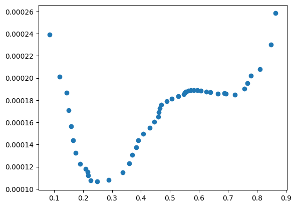
left_mean = y[x <= best_t].mean()
right_mean = y[x > best_t].mean()
plt.figure(figsize=(7, 4))
plt.scatter(x, y, s=20, alpha=0.7)
plt.axvline(best_t, linewidth=2, label="best split")
plt.hlines(left_mean, x.min(), best_t, linewidth=3, label="left mean")
plt.hlines(right_mean, best_t, x.max(), linewidth=3, label="right mean")
plt.xlabel("$x$")
plt.ylabel("$y$")
plt.title("Best first regression-tree split")
plt.legend()
plt.tight_layout()
plt.show()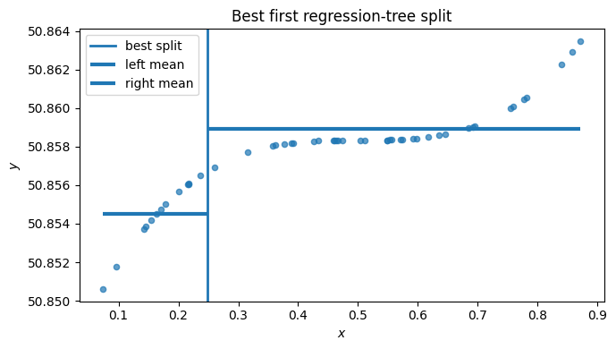
25.4.2 Fitting regression trees with different depths
Often we control the maximum depth of the tree:
- too many splits: overfitting
- too few splits: underfitting
The maximum depth controls how many rounds of splitting are allowed. Small depth gives a simple tree. Large depth gives a more flexible tree.
import numpy as np
import matplotlib.pyplot as plt
from sklearn.tree import DecisionTreeRegressor
# Simulate one-dimensional regression data
rng = np.random.default_rng(657677)
N = 200
x = rng.uniform(0, 1, size=N)
x = np.sort(x)
def true_regression_function(x):
return (
2.0 * np.sin(2 * np.pi * x)
+ 1.5 * (x > 0.55)
- 1.0 * (x > 0.80)
)
f_true = true_regression_function(x)
y = f_true + rng.normal(scale=0.35, size=N)
# sklearn expects X to be a matrix, not a vector
X_reg_1d = x.reshape(-1, 1)
# Grid for plotting fitted functions
x_grid = np.linspace(0, 1, 500).reshape(-1, 1)
f_true_grid = true_regression_function(x_grid[:, 0])for depth in [1, 2, 4, None]:
tree_reg = DecisionTreeRegressor(
max_depth=depth,
min_samples_leaf=5,
random_state=657677
)
tree_reg.fit(X_reg_1d, y)
y_grid = tree_reg.predict(x_grid)
plt.figure(figsize=(7, 4))
plt.scatter(
x,
y,
s=20,
alpha=0.5,
label="training data"
)
plt.plot(
x_grid[:, 0],
y_grid,
linewidth=2.5,
label="tree prediction"
)
plt.plot(
x_grid[:, 0],
f_true_grid,
linewidth=2,
alpha=0.7,
label="true function"
)
plt.xlabel("$x$")
plt.ylabel("$y$")
plt.title(f"Regression tree, max_depth={depth}")
plt.legend()
plt.tight_layout()
plt.show()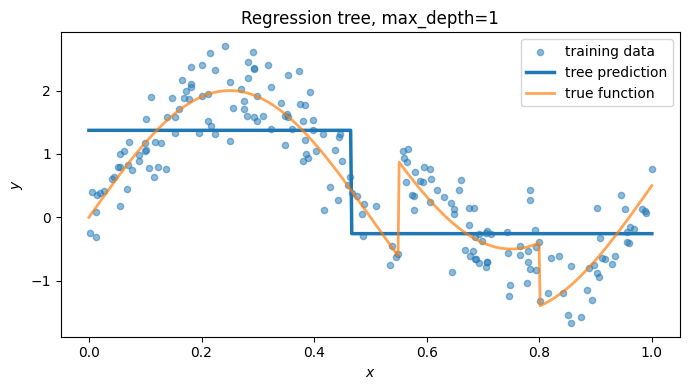
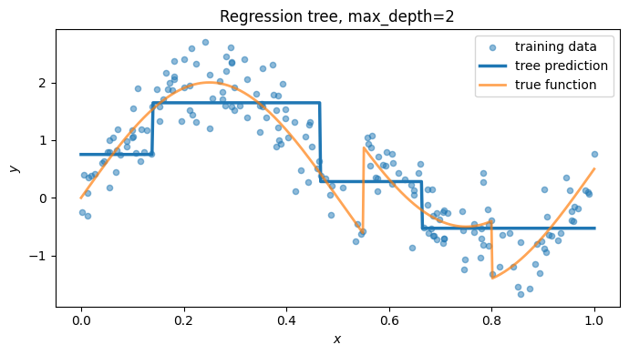
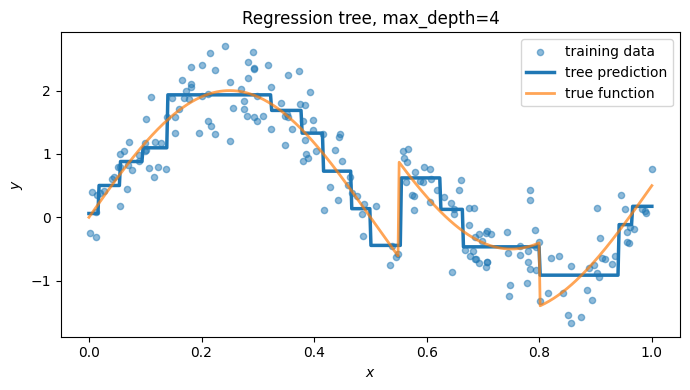
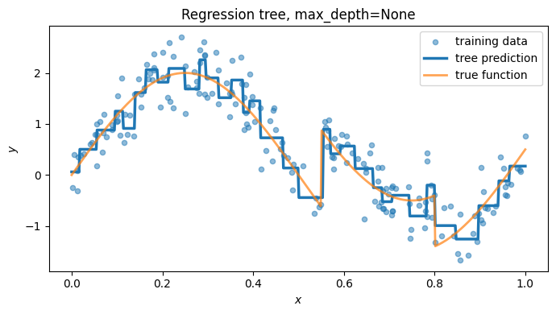
The overall algorithm for regression trees is thus:
- Start with all training observations in one region.
- For each feature \(j\), search over candidate thresholds \(t\).
- Choose the split \((j,t)\) that gives the largest decrease in RSS.
- Recursively apply the same process to each child node.
- Stop when a stopping rule is met.
Common stopping rules include:
- maximum depth;
- minimum observations in a leaf;
- minimum improvement from a split;
- maximum number of leaf nodes.
The greedy procedure is not guaranteed to find the globally best tree. But, searching over all possible trees is computationally infeasible.
25.5 Classification trees
Recall how classification trees work. For a classification tree, suppose
\[ Y \in \{1,\dots,K\}. \]
In each region \(R_m\), define the empirical class proportions
\[ \hat p_{mk}=\frac{1}{N_m} \sum_{i:x_i \in R_m} \mathbf{1}\{y_i=k\} = \text{pct. of class $k$ in $R_m$}, \qquad k=1,\dots,K. \]
So each leaf has an estimated class-probability vector
\[ \hat p_m =\begin{bmatrix} \hat p_{m1} \\ \vdots \\ \hat p_{mK} \end{bmatrix} \in \mathbb{R}^K \]
Then the fitted score function is
\[ \hat s(x) =\sum_{m=1}^M \hat p_m \mathbf{1}\{x \in R_m\} = \text{$\hat p_m$ if $x\in R_m$} \]
Thus \(\hat s(x) \in \mathbb{R}^K\), and its \(k\)th entry is the estimated probability that \(Y=k\).
The final predicted class is
\[ \hat f(x)=\arg\max_{1 \le k \le K} s_k(x). \]
So classification trees estimate local class proportions and then predict the most common class.
25.5.1 Impurity measures
While regression trees measured performance and made splitting decisions based on RSS, for classification, CART chooses splits that make the child nodes more pure, or, equivalently, less impure.
A node is pure if most or all observations in it belong to one class.
Let
\[ \hat p_k \]
be the fraction of observations in a node that belong to class \(k\).
Common impurity measures are:
Misclassification error
\[ 1 - \max_k \hat p_k. \]
Gini impurity
\[ \sum_{k=1}^K \hat p_k(1-\hat p_k) =1-\sum_{k=1}^K \hat p_k^2. \]
Entropy
\[ -\sum_{k=1}^K \hat p_k\log(\hat p_k). \]
In practice, Gini impurity and entropy are more common for growing trees than misclassification error because they are more sensitive to changes in node purity.
p = np.linspace(0.001, 0.999, 500)
misclassification = 1 - np.maximum(p, 1 - p)
gini = 2 * p * (1 - p)
entropy = -(p * np.log(p) + (1 - p) * np.log(1 - p)) * (1/2)/(-np.log(1/2))
plt.figure(figsize=(7, 4))
plt.plot(p, misclassification, label="misclassification")
plt.plot(p, gini, label="Gini")
plt.plot(p, entropy, label="entropy")
plt.xlabel("class probability $p$")
plt.ylabel("impurity")
plt.title("Binary classification impurity measures")
plt.legend()
plt.tight_layout()
plt.show()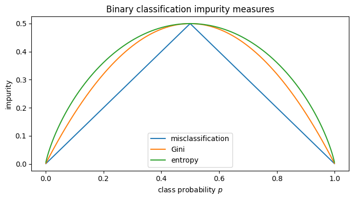
25.5.2 Choosing a split for classification
Suppose a node \(R\) is split into two child nodes
\[ R_1(j,t) \qquad \text{and} \qquad R_2(j,t). \]
Let \(I(R)\) denote the impurity of a node. CART chooses a split that minimizes the weighted child-node impurity:
\[ Q(j,t) =\frac{N_1}{N_R}I(R_1(j,t)) + \frac{N_2}{N_R}I(R_2(j,t)), \]
where \(N_R\) is the number of observations in the parent node and \(N_1,N_2\) are the numbers in the two child nodes.
Equivalently, CART chooses the split that maximizes impurity reduction:
\[ I(R)-Q(j,t). \]
25.5.3 Example
The next example uses two-dimensional data. The tree creates an axis-aligned decision boundary by repeatedly splitting on \(x_1\) or \(x_2\).
X_clf, y_clf = make_moons(
n_samples=350,
noise=0.25,
random_state=657677
)
plt.figure(figsize=(6, 5))
plt.scatter(X_clf[:, 0], X_clf[:, 1], c=y_clf, s=30, alpha=0.8)
plt.xlabel("$x_1$")
plt.ylabel("$x_2$")
plt.title("Binary classification data")
plt.tight_layout()
plt.show()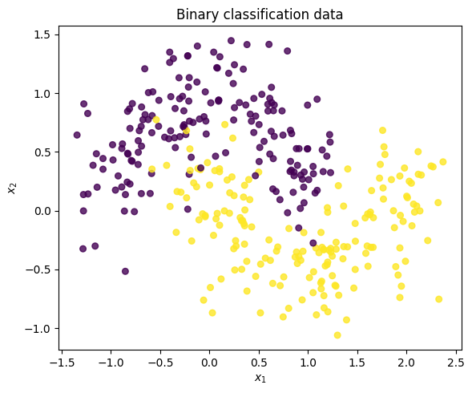
def plot_classifier_boundary(model, X, y, title=None, grid_points=300):
x_min, x_max = X[:, 0].min() - 0.5, X[:, 0].max() + 0.5
y_min, y_max = X[:, 1].min() - 0.5, X[:, 1].max() + 0.5
xx, yy = np.meshgrid(
np.linspace(x_min, x_max, grid_points),
np.linspace(y_min, y_max, grid_points)
)
grid = np.column_stack([xx.ravel(), yy.ravel()])
preds = model.predict(grid).reshape(xx.shape)
plt.figure(figsize=(6, 5))
plt.contourf(xx, yy, preds, alpha=0.25)
plt.scatter(X[:, 0], X[:, 1], c=y, s=30, alpha=0.85, edgecolor="black", linewidth=0.3)
plt.xlabel("$x_1$")
plt.ylabel("$x_2$")
if title is not None:
plt.title(title)
plt.tight_layout()
plt.show()from ipywidgets import interact, IntSlider
from sklearn.tree import DecisionTreeClassifier
def plot_tree_classifier_by_depth(max_depth):
tree_clf = DecisionTreeClassifier(
max_depth=max_depth,
criterion="gini",
random_state=657677
)
tree_clf.fit(X_clf, y_clf)
plot_classifier_boundary(
tree_clf,
X_clf,
y_clf,
title=f"Classification tree, max_depth={max_depth}"
)
interact(
plot_tree_classifier_by_depth,
max_depth=IntSlider(
value=1,
min=1,
max=25,
step=1,
description="depth"
)
);As before, we can visualize this as a decision tree:
small_tree = DecisionTreeClassifier(max_depth=3, random_state=657677)
small_tree.fit(X_clf, y_clf)
plt.figure(figsize=(14, 6))
plot_tree(
small_tree,
feature_names=["x1", "x2"],
class_names=["0", "1"],
filled=True,
rounded=True
)
plt.title("A small classification tree")
plt.show()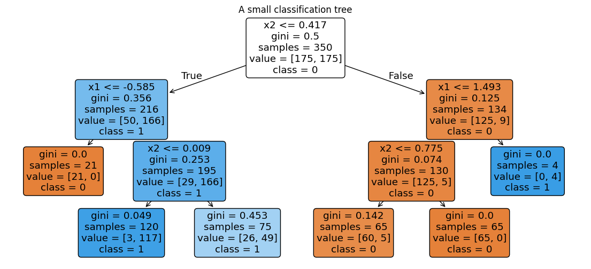
25.6 Example: diabetes data
We now fit a regression tree to a real dataset. The goal is to predict a quantitative disease-progression outcome from baseline measurements.
For this example, we use a shallow tree so that the fitted model is easy to inspect.
diabetes = load_diabetes(as_frame=True)
X_diab = diabetes.data
y_diab = diabetes.targetX_diab| age | sex | bmi | bp | s1 | s2 | s3 | s4 | s5 | s6 | |
|---|---|---|---|---|---|---|---|---|---|---|
| 0 | 0.038076 | 0.050680 | 0.061696 | 0.021872 | -0.044223 | -0.034821 | -0.043401 | -0.002592 | 0.019907 | -0.017646 |
| 1 | -0.001882 | -0.044642 | -0.051474 | -0.026328 | -0.008449 | -0.019163 | 0.074412 | -0.039493 | -0.068332 | -0.092204 |
| 2 | 0.085299 | 0.050680 | 0.044451 | -0.005670 | -0.045599 | -0.034194 | -0.032356 | -0.002592 | 0.002861 | -0.025930 |
| 3 | -0.089063 | -0.044642 | -0.011595 | -0.036656 | 0.012191 | 0.024991 | -0.036038 | 0.034309 | 0.022688 | -0.009362 |
| 4 | 0.005383 | -0.044642 | -0.036385 | 0.021872 | 0.003935 | 0.015596 | 0.008142 | -0.002592 | -0.031988 | -0.046641 |
| ... | ... | ... | ... | ... | ... | ... | ... | ... | ... | ... |
| 437 | 0.041708 | 0.050680 | 0.019662 | 0.059744 | -0.005697 | -0.002566 | -0.028674 | -0.002592 | 0.031193 | 0.007207 |
| 438 | -0.005515 | 0.050680 | -0.015906 | -0.067642 | 0.049341 | 0.079165 | -0.028674 | 0.034309 | -0.018114 | 0.044485 |
| 439 | 0.041708 | 0.050680 | -0.015906 | 0.017293 | -0.037344 | -0.013840 | -0.024993 | -0.011080 | -0.046883 | 0.015491 |
| 440 | -0.045472 | -0.044642 | 0.039062 | 0.001215 | 0.016318 | 0.015283 | -0.028674 | 0.026560 | 0.044529 | -0.025930 |
| 441 | -0.045472 | -0.044642 | -0.073030 | -0.081413 | 0.083740 | 0.027809 | 0.173816 | -0.039493 | -0.004222 | 0.003064 |
442 rows × 10 columns
y_diab0 151.0
1 75.0
2 141.0
3 206.0
4 135.0
...
437 178.0
438 104.0
439 132.0
440 220.0
441 57.0
Name: target, Length: 442, dtype: float64Let’s split into training and testing:
X_train_d, X_test_d, y_train_d, y_test_d = train_test_split(
X_diab,
y_diab,
test_size=0.30,
random_state=657677
)reg_tree = DecisionTreeRegressor(max_depth=3, min_samples_leaf=10, random_state=657677)
reg_tree.fit(X_train_d, y_train_d)DecisionTreeRegressor(max_depth=3, min_samples_leaf=10, random_state=657677)In a Jupyter environment, please rerun this cell to show the HTML representation or trust the notebook.
On GitHub, the HTML representation is unable to render, please try loading this page with nbviewer.org.
Parameters
pred_train_d = reg_tree.predict(X_train_d)
pred_test_d = reg_tree.predict(X_test_d)
rmse_train = np.sqrt(mean_squared_error(y_train_d, pred_train_d))
rmse_test = np.sqrt(mean_squared_error(y_test_d, pred_test_d))
print("Train RMSE:", round(rmse_train, 2))
print("Test RMSE:", round(rmse_test, 2))
print("Number of leaves:", reg_tree.get_n_leaves())Train RMSE: 52.5
Test RMSE: 63.89
Number of leaves: 8plt.figure(figsize=(16, 7))
plot_tree(
reg_tree,
feature_names=X_diab.columns,
filled=True,
rounded=True,
impurity=False
)
plt.title("Regression tree for the diabetes data")
plt.show()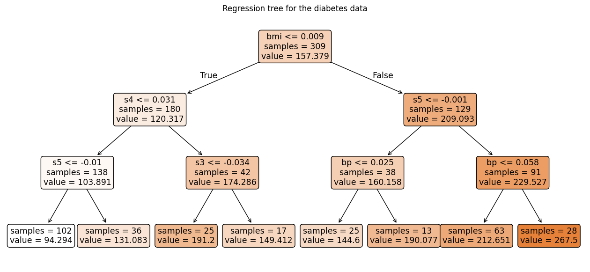
reg_importance = pd.Series(
reg_tree.feature_importances_,
index=X_diab.columns,
name="importance"
).sort_values(ascending=False)
display(reg_importance.to_frame())| importance | |
|---|---|
| bmi | 0.586094 |
| s5 | 0.163296 |
| s4 | 0.157907 |
| bp | 0.075217 |
| s3 | 0.017487 |
| age | 0.000000 |
| sex | 0.000000 |
| s1 | 0.000000 |
| s2 | 0.000000 |
| s6 | 0.000000 |
Feature importance scores summarize how much each predictor was used to improve the tree. Each time a variable is used in a split, we measure the reduction in loss or impurity caused by that split. The importance of a variable is the total reduction from all splits using that variable, normalized so the importances sum to one.
For a regression tree, a split is useful if it reduces RSS. If a split changes the RSS from
\[ RSS_{\text{parent}} \]
to
\[ RSS_{\text{left}} + RSS_{\text{right}}, \]
then the improvement is
\[ RSS_{\text{parent}} - (RSS_{\text{left}} + RSS_{\text{right}}). \]
For a classification tree, the same idea applies, but RSS is replaced by an impurity measure such as Gini impurity or entropy.
25.7 Real classification example: breast cancer data
Next we fit a classification tree. The goal is to classify tumors using measured features.
cancer = load_breast_cancer(as_frame=True)
X_cancer = cancer.data
y_cancer = cancer.target
target_names = cancer.target_namesX_cancer| mean radius | mean texture | mean perimeter | mean area | mean smoothness | mean compactness | mean concavity | mean concave points | mean symmetry | mean fractal dimension | ... | worst radius | worst texture | worst perimeter | worst area | worst smoothness | worst compactness | worst concavity | worst concave points | worst symmetry | worst fractal dimension | |
|---|---|---|---|---|---|---|---|---|---|---|---|---|---|---|---|---|---|---|---|---|---|
| 0 | 17.99 | 10.38 | 122.80 | 1001.0 | 0.11840 | 0.27760 | 0.30010 | 0.14710 | 0.2419 | 0.07871 | ... | 25.380 | 17.33 | 184.60 | 2019.0 | 0.16220 | 0.66560 | 0.7119 | 0.2654 | 0.4601 | 0.11890 |
| 1 | 20.57 | 17.77 | 132.90 | 1326.0 | 0.08474 | 0.07864 | 0.08690 | 0.07017 | 0.1812 | 0.05667 | ... | 24.990 | 23.41 | 158.80 | 1956.0 | 0.12380 | 0.18660 | 0.2416 | 0.1860 | 0.2750 | 0.08902 |
| 2 | 19.69 | 21.25 | 130.00 | 1203.0 | 0.10960 | 0.15990 | 0.19740 | 0.12790 | 0.2069 | 0.05999 | ... | 23.570 | 25.53 | 152.50 | 1709.0 | 0.14440 | 0.42450 | 0.4504 | 0.2430 | 0.3613 | 0.08758 |
| 3 | 11.42 | 20.38 | 77.58 | 386.1 | 0.14250 | 0.28390 | 0.24140 | 0.10520 | 0.2597 | 0.09744 | ... | 14.910 | 26.50 | 98.87 | 567.7 | 0.20980 | 0.86630 | 0.6869 | 0.2575 | 0.6638 | 0.17300 |
| 4 | 20.29 | 14.34 | 135.10 | 1297.0 | 0.10030 | 0.13280 | 0.19800 | 0.10430 | 0.1809 | 0.05883 | ... | 22.540 | 16.67 | 152.20 | 1575.0 | 0.13740 | 0.20500 | 0.4000 | 0.1625 | 0.2364 | 0.07678 |
| ... | ... | ... | ... | ... | ... | ... | ... | ... | ... | ... | ... | ... | ... | ... | ... | ... | ... | ... | ... | ... | ... |
| 564 | 21.56 | 22.39 | 142.00 | 1479.0 | 0.11100 | 0.11590 | 0.24390 | 0.13890 | 0.1726 | 0.05623 | ... | 25.450 | 26.40 | 166.10 | 2027.0 | 0.14100 | 0.21130 | 0.4107 | 0.2216 | 0.2060 | 0.07115 |
| 565 | 20.13 | 28.25 | 131.20 | 1261.0 | 0.09780 | 0.10340 | 0.14400 | 0.09791 | 0.1752 | 0.05533 | ... | 23.690 | 38.25 | 155.00 | 1731.0 | 0.11660 | 0.19220 | 0.3215 | 0.1628 | 0.2572 | 0.06637 |
| 566 | 16.60 | 28.08 | 108.30 | 858.1 | 0.08455 | 0.10230 | 0.09251 | 0.05302 | 0.1590 | 0.05648 | ... | 18.980 | 34.12 | 126.70 | 1124.0 | 0.11390 | 0.30940 | 0.3403 | 0.1418 | 0.2218 | 0.07820 |
| 567 | 20.60 | 29.33 | 140.10 | 1265.0 | 0.11780 | 0.27700 | 0.35140 | 0.15200 | 0.2397 | 0.07016 | ... | 25.740 | 39.42 | 184.60 | 1821.0 | 0.16500 | 0.86810 | 0.9387 | 0.2650 | 0.4087 | 0.12400 |
| 568 | 7.76 | 24.54 | 47.92 | 181.0 | 0.05263 | 0.04362 | 0.00000 | 0.00000 | 0.1587 | 0.05884 | ... | 9.456 | 30.37 | 59.16 | 268.6 | 0.08996 | 0.06444 | 0.0000 | 0.0000 | 0.2871 | 0.07039 |
569 rows × 30 columns
y_cancer0 0
1 0
2 0
3 0
4 0
..
564 0
565 0
566 0
567 0
568 1
Name: target, Length: 569, dtype: int64X_train_c, X_test_c, y_train_c, y_test_c = train_test_split(
X_cancer,
y_cancer,
test_size=0.30,
random_state=657677,
stratify=y_cancer
)clf_tree = DecisionTreeClassifier(
max_depth=3,
min_samples_leaf=10,
criterion="gini",
random_state=657677
)
clf_tree.fit(X_train_c, y_train_c)DecisionTreeClassifier(max_depth=3, min_samples_leaf=10, random_state=657677)In a Jupyter environment, please rerun this cell to show the HTML representation or trust the notebook.
On GitHub, the HTML representation is unable to render, please try loading this page with nbviewer.org.
Parameters
pred_train_c = clf_tree.predict(X_train_c)
pred_test_c = clf_tree.predict(X_test_c)
print("Train accuracy:", round(accuracy_score(y_train_c, pred_train_c), 3))
print("Test accuracy:", round(accuracy_score(y_test_c, pred_test_c), 3))
print("Number of leaves:", clf_tree.get_n_leaves())Train accuracy: 0.965
Test accuracy: 0.924
Number of leaves: 6ConfusionMatrixDisplay.from_estimator(
clf_tree,
X_test_c,
y_test_c,
display_labels=target_names
)
plt.title("Test-set confusion matrix")
plt.tight_layout()
plt.show()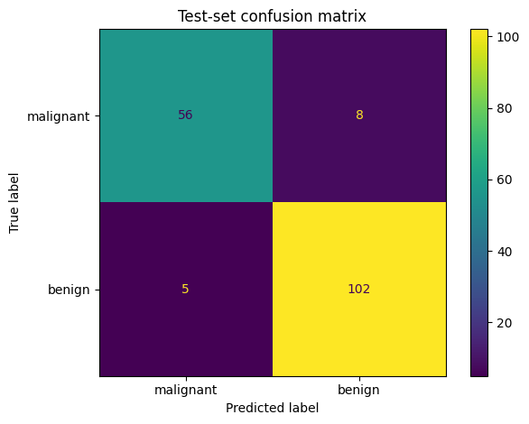
plt.figure(figsize=(18, 8))
plot_tree(
clf_tree,
feature_names=X_cancer.columns,
class_names=target_names,
filled=True,
rounded=True,
impurity=True,
proportion=True
)
plt.title("Classification tree for the breast cancer data")
plt.show()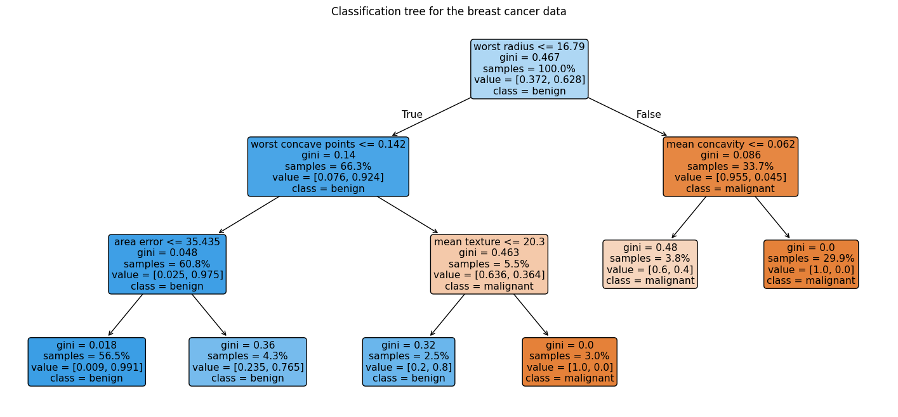
clf_importance = pd.Series(
clf_tree.feature_importances_,
index=X_cancer.columns,
name="importance"
).sort_values(ascending=False)
display(clf_importance.head(10).to_frame())| importance | |
|---|---|
| worst radius | 0.831063 |
| worst concave points | 0.091179 |
| mean texture | 0.042200 |
| mean concavity | 0.025765 |
| area error | 0.009794 |
| mean area | 0.000000 |
| mean compactness | 0.000000 |
| mean smoothness | 0.000000 |
| mean symmetry | 0.000000 |
| mean concave points | 0.000000 |
25.8 Practical notes
25.8.1 Scaling
Unlike k-means, ordinary CART splits are not sensitive to monotone rescaling of a feature. A split like
\[ x_j \leq t \]
becomes an equivalent split after changing units, with a correspondingly changed threshold. For this reason, standardization is usually not required for basic trees.
25.8.2 Categorical variables
Conceptually, trees can split categorical variables by grouping categories. In practice, implementation details vary. Some software handles categorical splits directly, while scikit-learn’s basic tree implementation expects numeric features (see: link). However, you can encode them as one-hot vectors if you want.
25.8.3 Missing values
CART-style methods can be adapted to missing values. See: link.
A classical CART implementation can handle missing values using surrogate splits. If the primary split at a node uses \(x_j\) but \(x_j\) is missing for a new observation, the tree uses a backup split on another variable that most closely mimics the primary split.
sklearn uses a different strategy. When fitting a split, it evaluates each threshold twice: once with missing values sent left and once with missing values sent right. It chooses the better option and stores that missing-value direction. Thus, sklearn handles missing values by learning which branch missing values should follow.
25.8.4 Interpretation
A shallow tree can be very interpretable because the prediction rule is a sequence of if-then statements. A deep tree can be much harder to interpret and can have high variance.